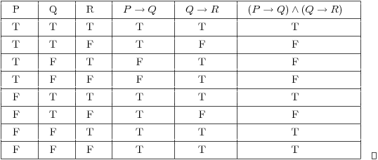
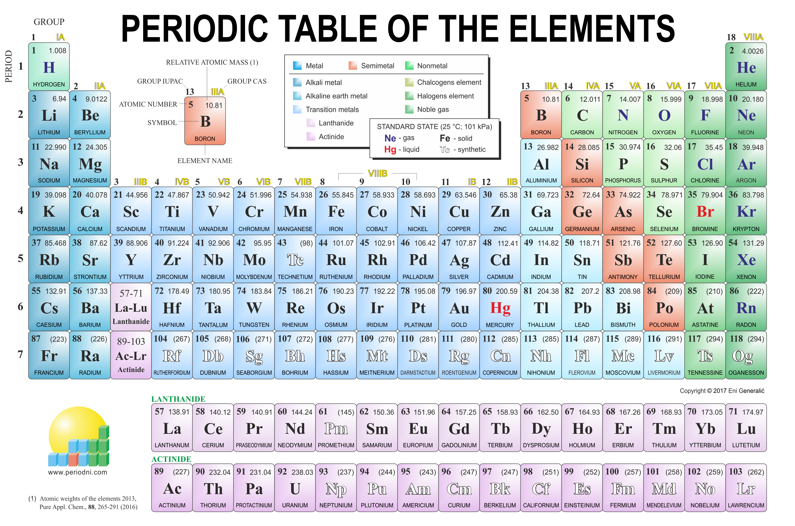
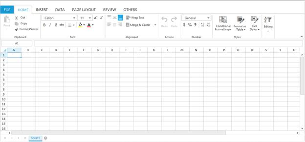

Tabular Data
Class data in a table
| Name | Surname | Favourite Sauce | Home Town |
|---|---|---|---|
| Omar | Salie | Peri-Peri | Cape Town |
| Chad | Wyngaard | Peri-naise | Cape Town |
| Nelisa | Bani | Sweet-Chilli | Cape Town |
| Brandon | Brevis | BBQ | Cape Town |
| Sheldon | Orgill | Peri-Peri | Cape Town |
| Zaidabibi | Armien | Mayonnaise | Cape Town |
| Muneer | Carollus | Chilli | Cape Town |
| Zoe | Thomas | Seafood | Cape Town |
| Alexander | Fortuin | Tomato | Cape Town |
A table is an arrangement of information in rows and columns containing cells that make comparing and contrasting information easier. As you can see in the following example, the data are much easier to read than they would be in a list containing that same data.

Several studies, journal guidelines, and discourses on scientific writing1-10 affirm the critical role that tables, figures, and graphs (or display items) play in enhancing the quality of manuscripts. Scientific tables and graphs can be utilized to represent sizeable numerical or statistical data in a time- and space-effective manner.
Mathematical tables are lists of numbers showing the results of calculation with varying arguments, before calculators were cheap and plentiful, people would use such tables to simplify and drastically speed up computation.
The periodic table is a tabular arrangement of the chemical elements, ordered by their atomic number, electron configuration, and recurring chemical properties, whose adopted structure shows periodic trends. Generally, within one row (period) the elements are metals on the left, and non-metals on the right, with the elements having similar chemical behaviours being placed in the same column. Table rows are commonly called periods and columns are called groups. Six groups have accepted names as well as assigned numbers: for example, group 17 elements are halogens; and group 18 are noble gases. Also displayed are four simple rectangular areas or blocks associated with the filling of different atomic orbitals.
A table is a collection of related data held in a structured format within a database. It consists of columns, and rows. In relational databases, and flat file databases, a table is a set of data elements (values) using a model of vertical columns (identifiable by name) and horizontal rows, the cell being the unit where a row and column intersect.[1] A table has a specified number of columns, but can have any number of rows.[2] Each row is identified by one or more values appearing in a particular column subset. A specific choice of columns which uniquely identify rows is called the primary key.
Tables have uses in software development for both high-level specification and low-level implementation. Usage in software specification can encompass ad hoc inclusion of simple decision tables in textual documents through to the use of tabular specification methodologies, examples of which include SCR and Statestep.
Specific Uses of Tabular Data
- Organisation of data to make reading and comparison easier.
- Speeding up computation of information.
- To represent large amounts of data.
- A very specific way of listing chemical elements has already been made.
- Databases consist of rows and columns that store the necessary information.
- Software may make use of tables itself and/or a database.